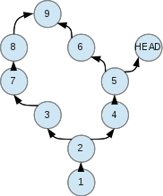

Git
Control version system
Created by Marusich Igor
What is Git?
Is a version control system for tracking changes in files and coordinating work on those files among multiple people.
Scandals! Intrigue! Investigations!
- Git doesn't store folders
- Git doesn't store files
- Revision doesn't have a sequence number
- Commits may not go in order
Questions
- How does all this work?
- How can all this be understood and remembered?
Git. Almost under the hood

Create
- git clone ssh://user@domain.com/repo.git
- git init
Locale changes
- git status
- git diff
- git add -A or git add .
- git add -p [file]
- git commit -a
- git commit
- git commit --amend
Commit history
- git log
- git log -p [file]
- git blame [file]
Branches
- git branch -av
- git checkout [branch]
- git branch [new_branch]
- git checkout -b [new_branch]
- git branch -d [branch]
Update and publish
- git remote -v
- git fetch [repository]
- git pull [repository] [branch]
- git push [repository] [branch]
- git branch -dr [repository/branch]
Best practice
- Add related changes to commit
- Make commits often
- Don't publish commit with unfinished work
- Test your code after commit
- Write good comments
- CVS is not backup storage
- Use branch
- Help and documentation: git help [command]
Conclusion
- Git is very flexible
- Use the console client
- Think of new processes
- Write for your pleasure